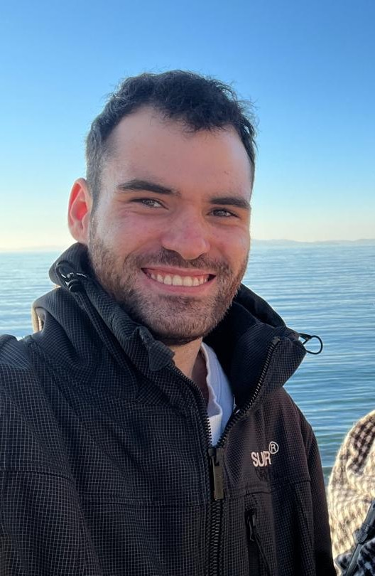

I am a third-year student at Maastricht University, pursuing a degree in Data Science and Artificial Intelligence.
I enjoy working on projects that involve data analysis, machine learning, and artificial intelligence, also Natural Language Processing.
Over my years of study, I have developed a strong foundation in these areas, as well as strong problem-solving and communication skills.
Working on Projects in a team environment has allowed me to develop strong collaboration skills, it has also highlighted to me the importance of planning and organization within a team, to ensure that all of the required deliverables are met in a timely manner.
Born and raised in Zimbabwe, I have gained throughout my years a understanding of different cultures and perspectives individuals have depending on their background.
How these cultures interact and how the exact same situations and even language are viewed differently in each respective culture is something I find fascinating.

I am passionate about data science and enjoy working with large datasets to extract meaningful insights.
I am fascinated by the potential of artificial intelligence to transform industries and improve our daily lives. I have experience in developing machine learning models and implementing AI algorithms.
I am particularly interested in natural language processing and its applications in chatbots, sentiment analysis, and text classification. I have experience in developing NLP models using Python and popular libraries such as NLTK and spaCy.
One of my most reqarding projects involved building a LLM model that was able to take Legal Documents and summarize them into layman's terms.
As an elective for my degree, I took the course of Intro to Video and Image Processing
This sparked my interest in this field. I have experience in developing computer vision models for image classification, object detection, and image segmentation.
I specifically enjoy working on the different algorithms, and how different image processing techniques can be applied to obtain the best results for the given scenario.
In my free time, I enjoy photography and capturing moments that tell a story. I have experience in landscape, portrait, and street photography.
I am also passionate about music with over 9 years of experience playing the Contrabass and Euphonium.
I also dabble in composing and producing music.
View My Personal CompositionsI enjoy playing video games in my free time, Playing video games has also helped me develop problem-solving skills and strategic thinking.
Also planning and organization as I play more complex games such as strategy and simulation games. (i.e. Total War series, Age of Empires)
I also maintain a dedicated server for hosting a Space Engineers server, using HostingHavoc.
My immediate goal is to write and complete my Bachelor's Thesis. It will be focused focused on multi-agent systems, exploring how complex AI interactions can be modeled effectively, and made to act like humans, with their own unique characteristics, behaviors and belief systems.
My long-term goal is to contribute to the field of AI research and development, creating innovative solutions that can make a positive impact on society.
Fluent in English
Moderate proficiency in Greek
Programming: Python, Java, MATLAB
Web & Document: HTML, CSS, LaTeX
Tools & Workflows: Git, Dedicated Server Administration (Learn't this one through my video game hobby)
Throughout my studies, I have developed multi-agent simulation environments in Java and Python, I have also worked on various machine learning, NLP and simulation projects.
A particularly engaging NLP project involved designing systems for human-robot interaction, focusing specifically on how a group of people can collaboratively interact with and control a robot to navigate it to a specific point.
View My Full Portfolio